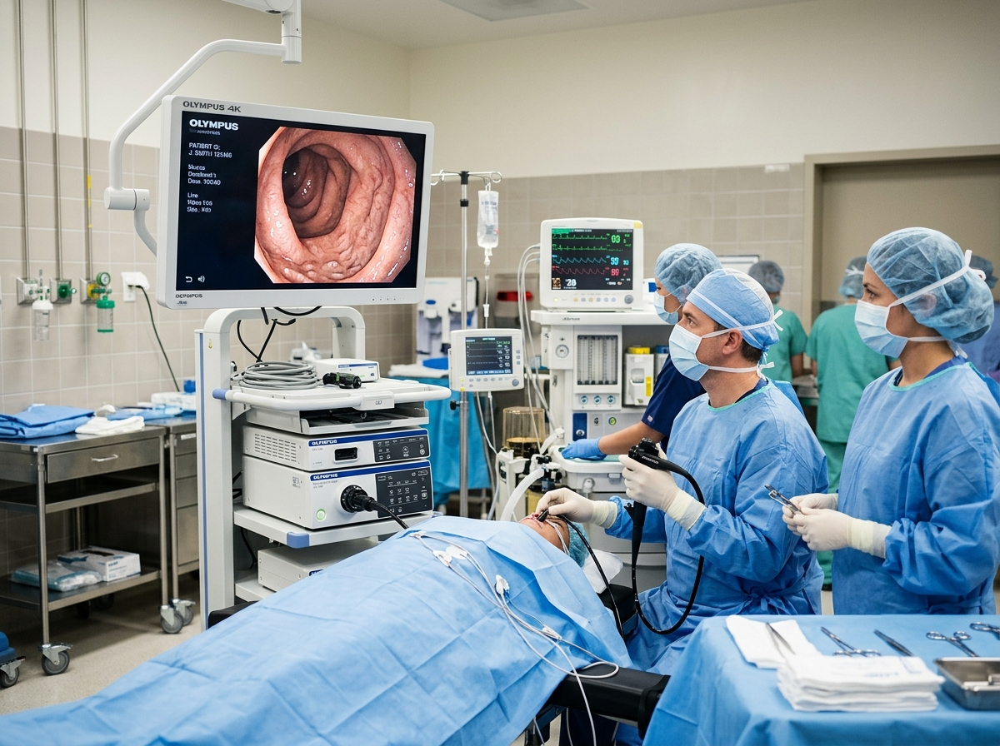
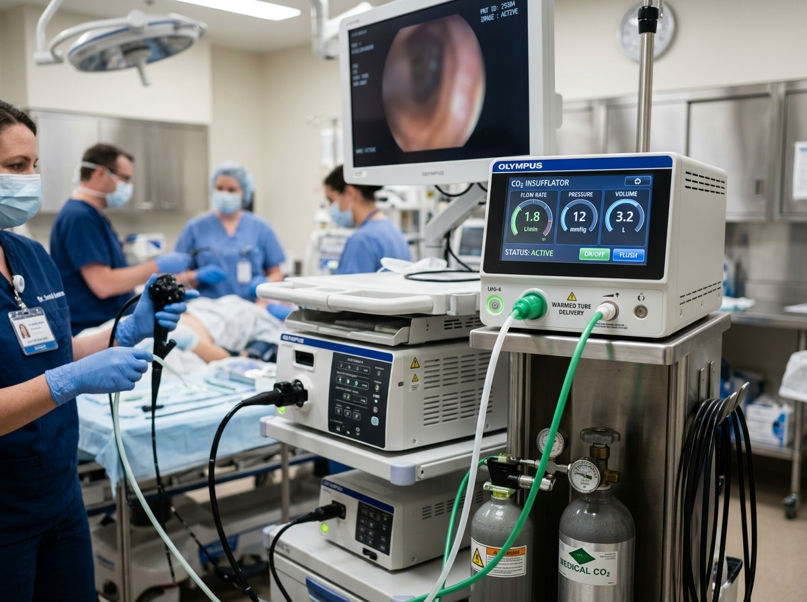
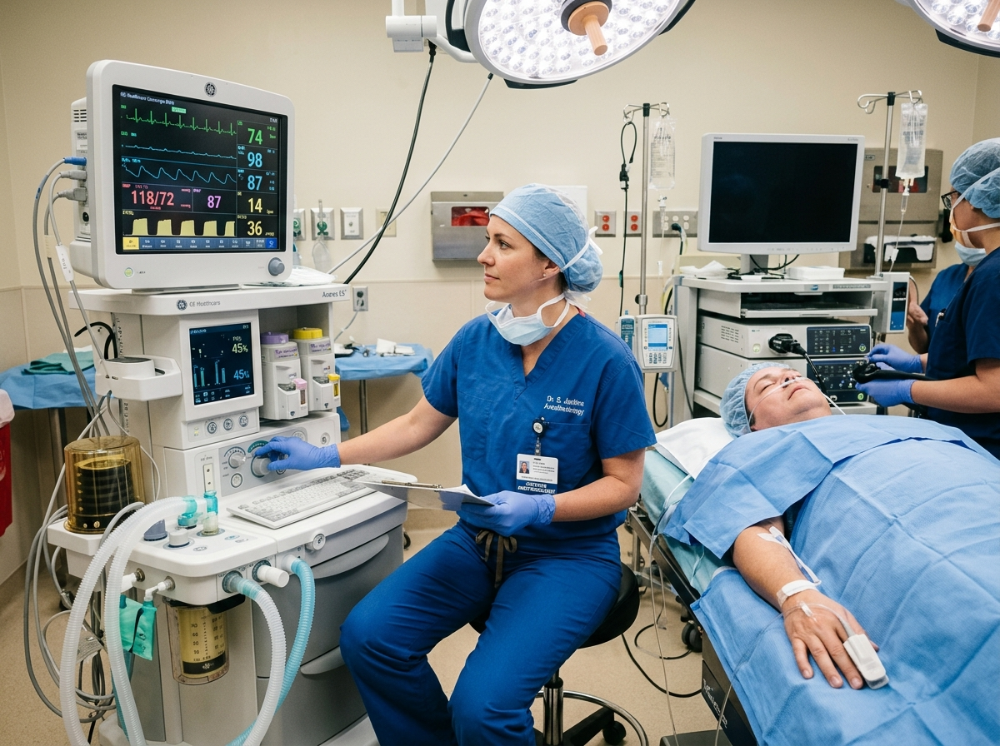
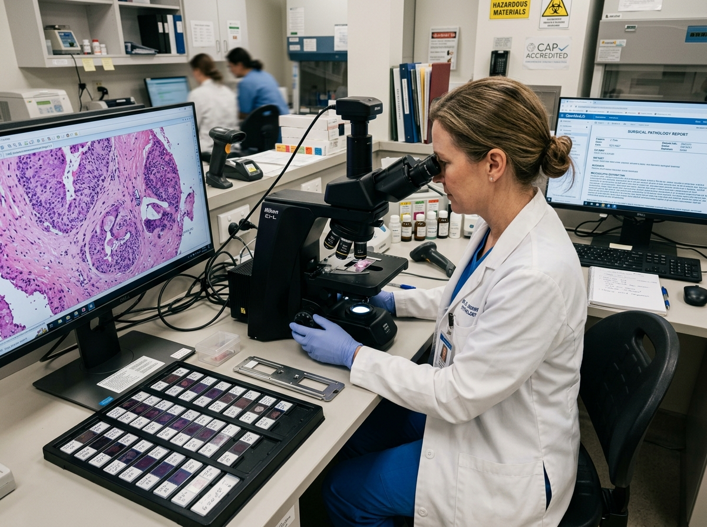

Esophageal Care
Acid Reflux, GERD & Barrett's Esophagus
Chronic heartburn, regurgitation, painful swallowing (dysphagia), and chronic cough. We provide high-resolution manometry, pH monitoring, and mucosal ablation.
A reimagined clinical standard for digestive wellness. Board-certified gastroenterologists, painless AI-assisted endoscopy, and precision therapy tailored to your gut health.
Persistent digestive symptoms should never be ignored. Our board-certified specialists provide clear answers, modern diagnostics, and customized treatment plans for each clinical condition.
Chronic heartburn, regurgitation, painful swallowing (dysphagia), and chronic cough. We provide high-resolution manometry, pH monitoring, and mucosal ablation.
Essential preventative care starting at age 45, or earlier for patients with familial history or rectal bleeding. Painless HD screening with AI polyp detection.
Specialized multidisciplinary management of Crohn's disease and ulcerative colitis utilizing targeted biologic therapies, intestinal ultrasound, and dietary therapy.
Metabolic liver dysfunction, elevated liver enzymes, viral hepatitis, and cirrhosis management supported by non-invasive FibroScan ultrasound elastography.
Relief from chronic bloating, painful cramping, Small Intestinal Bacterial Overgrowth (SIBO), and motility dysfunction through breath testing and neuromodulation.
Diagnosis of autoimmune gluten sensitivity, food intolerances, and unexplained nutrient deficiencies backed by clinical registered dietitians.
Our clinic provides outpatient procedural excellence. All examinations utilize modern ultra-thin optics, high-definition visualization, and gentle anesthesia.
Direct visual examination of the esophagus, stomach, and duodenum to diagnose ulcers, acid damage, Barrett's esophagus, and celiac disease with painless sedation.
Gold-standard preventative colorectal screening with cutting-edge artificial intelligence polyp recognition and comfortable carbon dioxide (CO2) insufflation.
Quick, non-invasive ultrasound elastography measuring liver stiffness and fat percentage in under 10 minutes without needles, sedation, or downtime.
Pill-sized wireless cameras navigating the small intestine and non-invasive hydrogen-methane breath analysis for precise detection of bacterial overgrowth.
We believe safety and comfort are foundational to clinical excellence. Our in-house diagnostic facility in Beverly Hills offers university-caliber medical technology.

Equipped with Olympus EVIS X1 4K optics and computer-aided diagnostic algorithms to identify microscopic flat polyps with unmatched precision.

We utilize medical-grade carbon dioxide rather than ambient air during colonoscopy, which is absorbed 150 times faster to eliminate post-procedure cramping.

Certified physician anesthesiologists administer gentle propofol sedation for complete comfort, rapid recovery wakeup, and zero memory of the procedure.

In-house pathology processing delivers biopsy analysis and polyp pathology results to you and your referring doctor within 48 to 72 hours.
Our physicians have trained at top medical institutions including Johns Hopkins, Harvard, and Stanford, dedicating unhurried time to understand every patient's symptoms.
Harvard Medical School & Stanford Healthcare-trained gastroenterologist with over 18 years of clinical leadership in complex digestive diagnostics.

Board-certified in Gastroenterology & Transplant Hepatology from Johns Hopkins. Expert in metabolic liver disease, cirrhosis, and screening.

Mayo Clinic-trained master endoscopist specializing in advanced therapeutic EUS, ERCP, and complex polyp removal.
We eliminate the fragmentation of healthcare through an integrated, compassionate journey from your first visit to long-term digestive well-being.
An unhurried, 45-minute clinical intake exploring your medical history, symptoms, and previous diagnostic records.
Your specialist outlines targeted diagnostic options — endoscopy, colonoscopy, breath test, or FibroScan.
Comfortable procedure completed in our accredited outpatient suite with prompt pathology analysis.
Personalized treatment protocol integrating medications, biologics, and clinical nutrition architecture.
Direct ongoing communication, symptom tracking, and lab updates through our 24/7 patient portal.
Everything you need to know about preparing for an appointment, procedure safety, and insurance coverage at Aura.
"Your digestive system is the foundation of your overall well-being. Our mission is to restore that foundation with precision, compassion, and uncompromising excellence."
Do not let persistent abdominal discomfort, reflux, or screening delays diminish your quality of life. Our specialist faculty is ready to provide precise, compassionate medical care.